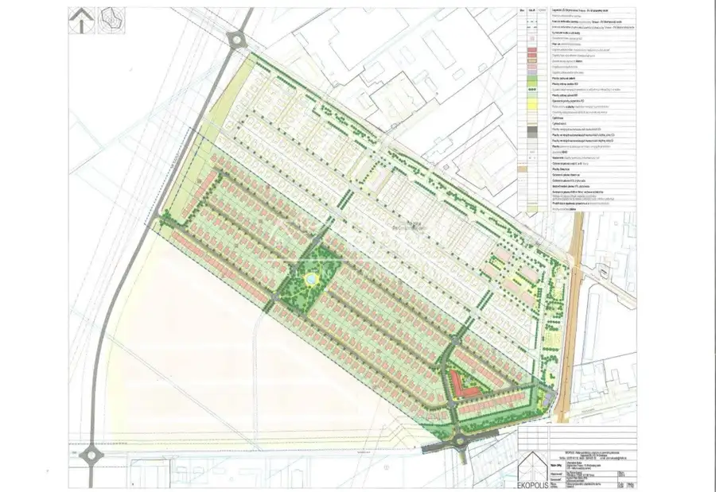
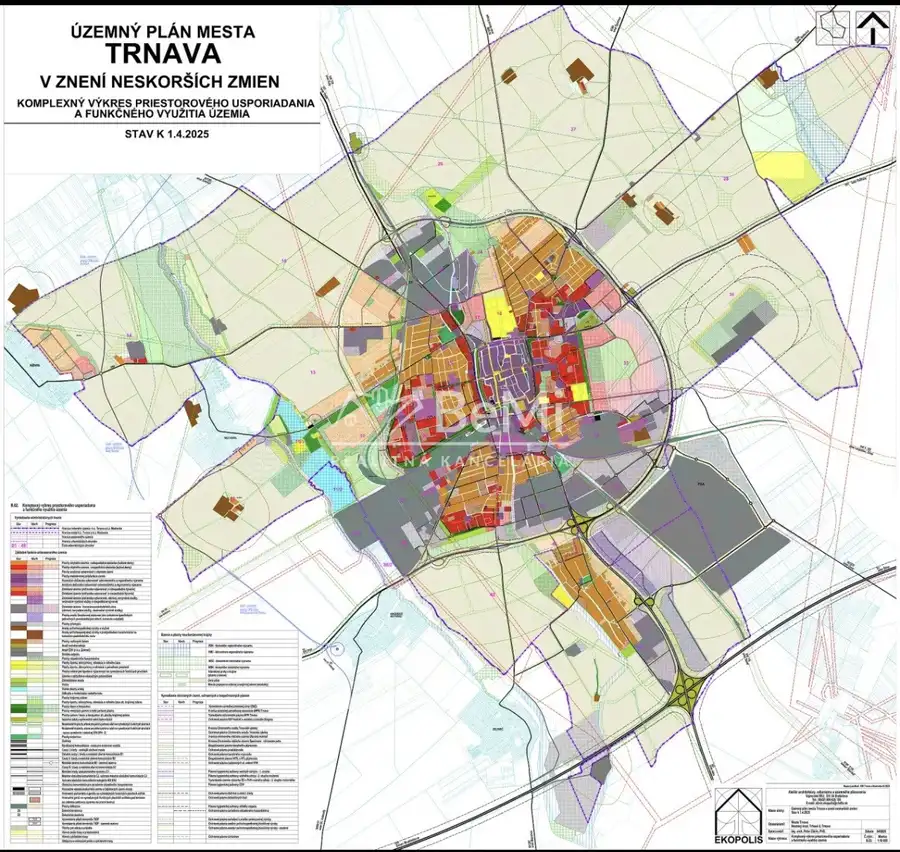

Investičný stavebný pozemok v pripravovanej obytnej zóne IBV Modranská – Trnava 002-14-BEST
Trnava


- VlastníctvoOsobné
O nehnuteľnosti
Ponúkame na predaj investičný stavebný pozemok v pripravovanej obytnej zóne IBV Modranská v meste Trnava. Táto nová lokalita bude plynule napojená na existujúcu obytnú zónu IBV Pri Orešianskej ceste, čo z nej robí perspektívne miesto pre budúcu výstavbu rodinných domov.K dispozícii je viacero pozemkov s výmerou od 500 m², ktoré predstavujú výbornú príležitosť na investíciu alebo budúcu výstavbu.📍 Lokalita je súčasťou územného plánu mesta Trnava (platného od 1.4.2025) s plánovanou realizáciou výstavby v rokoch 2029 – 2030.✔ výmera pozemkov od 500 m²✔ možnosť výberu z viacerých parciel✔ perspektívna rozvojová lokalita✔ inžinierske siete budú vybudované a hradené predávajúcimIdeálna príležitosť pre investorov alebo záujemcov, ktorí chcú zabezpečiť pozemok v budúcej obytnej štvrti mesta Trnava.Uvedená cena 150 000 € je bez provízie realitnej kancelárie, ktorú hradí kupujúci.PaedDr. Beáta Struhárová 0907199280struharova@realitybemi.sk
Parametre
- Druh
- Pozemok pre rodinné domy
- Dátum zverejnenia
- 06. 03. 2026
- Plocha pozemku
- 0 m²
- Typ
- Predaj
- Vlastníctvo
- Osobné